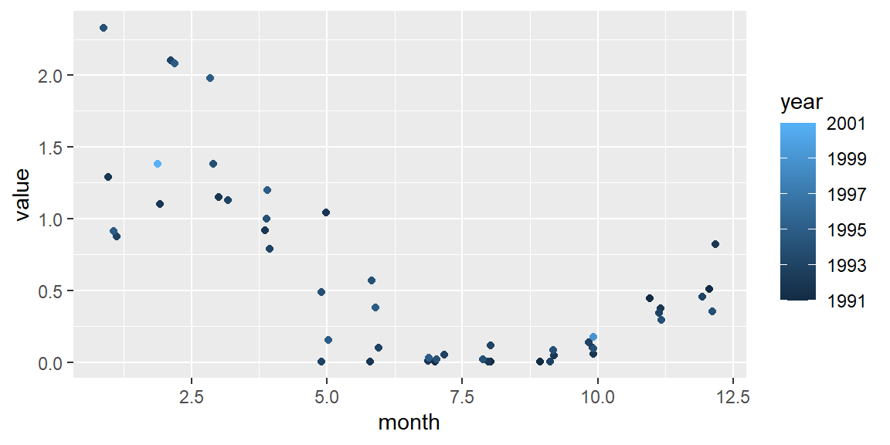

4 Package nwdm
To query the database, an r package is available. Install the package with devtools::install_github(“wstolte/nwdm”).
require(lubridate)
if(!require(nwdm)) {
print("Package nwdm will be installed")
devtools::install_github("wstolte/nwdm")
require(nwdm)
} else require(nwdm)
cql_list = list(p35preflabel = "Water body nitrate",
location_code = "DOOVBWT"
)
columns = c("location_code", "date", "depth", "vertical_reference_code", "parameter_label", "value", "unit_preflabel", "quality_code")
url = create_url(cql_list = cql_list)
myData <- read_csv(url)
myData %>%
mutate(month = month(date), year = year(date)) %>%
ggplot(aes(month, value)) +
geom_jitter(aes(color = year), width = 0.2)

Figure 4.1: Example of seasonal variation of nitrate concentration at location DOOVBWT.